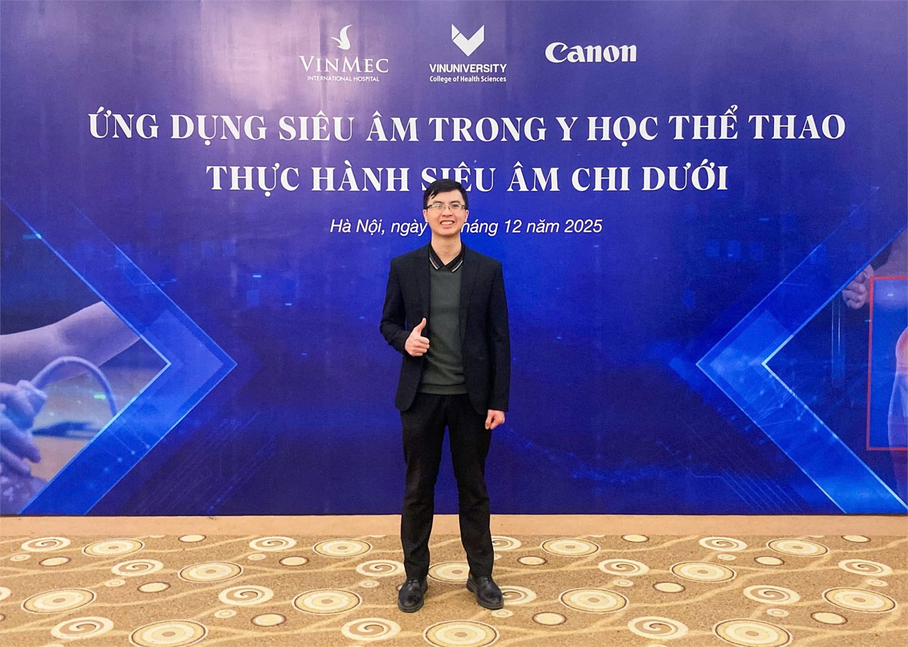
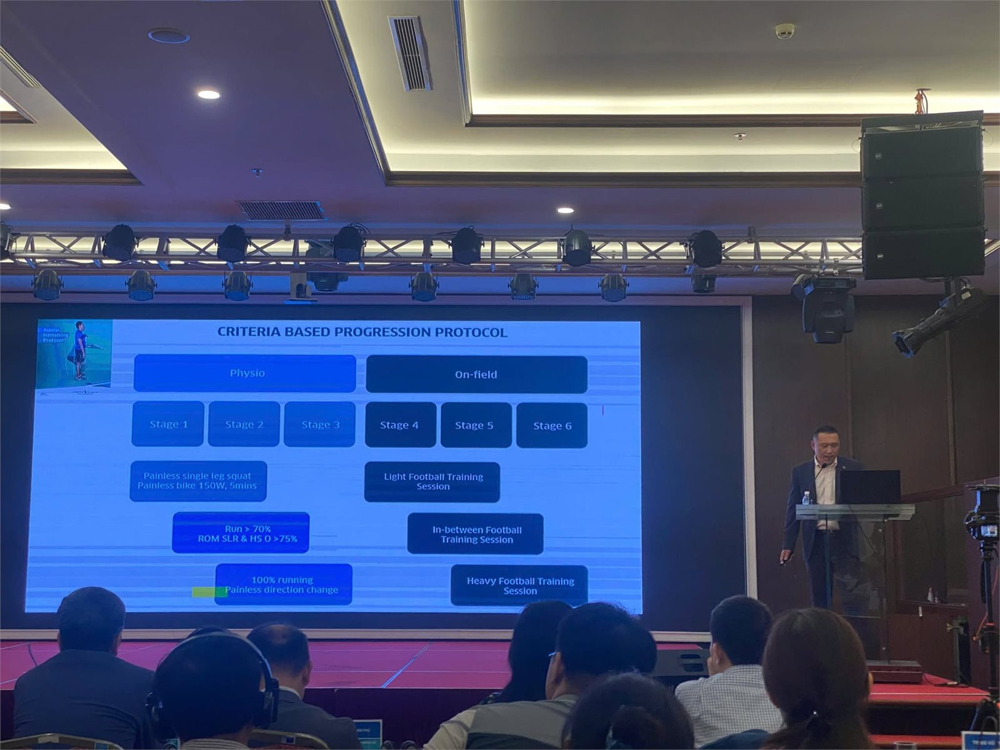

Tóm tắt: Điều trị đa mô thức (multimodal treatment) hiện được xem là nguyên tắc cốt lõi trong quản lý chấn thương và đau cơ xương khớp liên quan đến thể thao. Thay vì tập trung vào một phương pháp đơn lẻ, mô hình này kết hợp nhiều biện pháp nhằm tác động đồng thời lên tổn thương mô, chức năng vận động, các yếu tố cơ sinh học và tâm lý – xã hội. Trong bối cảnh đó, các kỹ thuật Y học cổ truyền như châm cứu, điện châm và xoa bóp trị liệu ngày càng được nghiên cứu và ứng dụng như những liệu pháp bổ trợ trong chiến lược phục hồi toàn diện. Bài viết tổng quan các bằng chứng hiện có về điều trị đa mô thức trong Y học thể thao và phân tích vai trò của Y học cổ truyền dưới góc nhìn y học chứng cứ.
Từ mô hình điều trị triệu chứng đến mô hình điều trị đa mô thức
Trong nhiều thập kỷ, điều trị chấn thương thể thao chủ yếu tập trung vào kiểm soát triệu chứng đau và phục hồi cấu trúc tổn thương. Tuy nhiên, các nghiên cứu gần đây cho thấy đau, chức năng vận động và khả năng trở lại thể thao là những khái niệm không hoàn toàn đồng nhất. Nhiều vận động viên vẫn có thể tồn tại bất thường hình ảnh học nhưng không có triệu chứng, trong khi một số trường hợp đau kéo dài lại không tương xứng với mức độ tổn thương mô quan sát được.

Chính vì vậy, các mô hình quản lý chấn thương hiện đại ngày càng chuyển dịch sang cách tiếp cận sinh học – tâm lý – xã hội (biopsychosocial model), trong đó đau được xem là kết quả của sự tương tác giữa tổn thương mô, cơ chế thần kinh, khả năng vận động, yếu tố nhận thức và môi trường tập luyện. Theo Tuyên bố đồng thuận của Ủy ban Olympic Quốc tế (IOC), chiến lược điều trị đau ở vận động viên cần giải quyết đồng thời các yếu tố bệnh sinh, bất thường cơ sinh học và các yếu tố tâm lý – xã hội thay vì chỉ tập trung vào một nguồn gốc duy nhất của cơn đau.1
Từ quan điểm này, điều trị đa mô thức trở thành nền tảng của Y học thể thao hiện đại. Các thành phần thường được phối hợp bao gồm giáo dục người bệnh, điều chỉnh tải lượng tập luyện, vận động trị liệu, tăng cường sức mạnh cơ, phục hồi chức năng thần kinh – cơ, dinh dưỡng thể thao, kiểm soát đau và các liệu pháp hỗ trợ khác.
Bằng chứng về hiệu quả của điều trị đa mô thức
Trong các bệnh lý quá tải thường gặp như đau gân bánh chè, viêm gân Achilles, đau khớp gối do chạy bộ hoặc đau thắt lưng liên quan đến vận động, các hướng dẫn lâm sàng hiện nay đều ưu tiên các chương trình vận động chủ động và phục hồi chức năng hơn là các biện pháp điều trị thụ động đơn lẻ.
Nhiều tổng quan hệ thống cho thấy kết quả điều trị tốt nhất thường đạt được khi các liệu pháp được kết hợp nhằm giải quyết đồng thời nhiều yếu tố nguy cơ. Việc giảm đau đơn thuần không đồng nghĩa với việc người bệnh đã sẵn sàng trở lại thể thao. Ngược lại, các chương trình kết hợp kiểm soát triệu chứng, phục hồi chức năng và tối ưu hóa tải lượng vận động có xu hướng giúp cải thiện chức năng lâu dài và giảm nguy cơ tái phát.

Quan điểm này cũng được phản ánh trong khuyến cáo của IOC khi nhấn mạnh rằng thuốc giảm đau chỉ nên là một thành phần trong chiến lược quản lý đau và luôn cần được phối hợp với các biện pháp không dùng thuốc nhằm tối ưu hóa quá trình phục hồi.1
Châm cứu và Y học cổ truyền trong Y học thể thao
Sự phát triển của y học chứng cứ đã thúc đẩy việc đánh giá khách quan hơn đối với các phương pháp Y học cổ truyền. Trong số đó, châm cứu là kỹ thuật được nghiên cứu nhiều nhất.
Các nghiên cứu cơ bản cho thấy châm cứu có thể ảnh hưởng đến nhiều cơ chế liên quan đến điều biến đau, bao gồm hoạt hóa hệ opioid nội sinh, điều hòa dẫn truyền serotonin và norepinephrine, đồng thời tác động lên các mạng lưới thần kinh trung ương tham gia xử lý cảm giác đau. Những thay đổi này được ghi nhận thông qua các nghiên cứu hình ảnh chức năng não và sinh học thần kinh trong nhiều thập kỷ qua.
Một phân tích tổng hợp sử dụng dữ liệu cộng hưởng từ chức năng (fMRI) công bố năm 2022 cho thấy châm cứu có khả năng điều hòa hoạt động của các vùng não liên quan đến nhận thức và điều biến đau như đồi thị, đảo não, hồi đai trước và nhân đuôi, cung cấp cơ sở sinh học cho các tác dụng giảm đau được ghi nhận trên lâm sàng.2
Bên cạnh đó, các tổng quan hệ thống về đau cơ xương khớp cho thấy châm cứu có thể mang lại hiệu quả cải thiện đau và chức năng trong ngắn hạn đối với một số bệnh lý như đau thắt lưng, đau gối do thoái hóa khớp, đau cổ vai gáy và hội chứng đau cân cơ. Tuy nhiên, mức độ bằng chứng còn khác nhau giữa các bệnh lý và vẫn tồn tại sự không đồng nhất về thiết kế nghiên cứu, phương pháp châm cứu và tiêu chí đánh giá kết quả.
Do đó, phần lớn các hướng dẫn hiện nay không xem châm cứu là liệu pháp điều trị đơn độc mà là một lựa chọn bổ trợ trong chương trình điều trị đa mô thức.
Vai trò lâm sàng của Y học cổ truyền trong mô hình phục hồi tích hợp
Từ góc độ thực hành Y học thể thao, giá trị lớn nhất của Y học cổ truyền có thể không nằm ở khả năng thay thế các phương pháp phục hồi chức năng mà ở việc hỗ trợ người bệnh tham gia hiệu quả hơn vào các chương trình phục hồi chủ động.
Ở những bệnh nhân đau nhiều hoặc co cứng cơ đáng kể, các kỹ thuật như châm cứu, điện châm hoặc xoa bóp trị liệu có thể góp phần cải thiện triệu chứng trong ngắn hạn. Khi đau giảm và biên độ vận động được cải thiện, người bệnh có khả năng thực hiện các bài tập tăng cường sức mạnh, kiểm soát vận động và tái huấn luyện chức năng tốt hơn. Đây cũng là lý do các mô hình phục hồi hiện đại ngày càng ưu tiên việc kết hợp các liệu pháp hỗ trợ với vận động trị liệu thay vì sử dụng riêng lẻ từng phương pháp.
Cần nhấn mạnh rằng hiệu quả lâu dài của điều trị chấn thương thể thao vẫn phụ thuộc chủ yếu vào việc khôi phục chức năng vận động, điều chỉnh tải lượng tập luyện và giải quyết các yếu tố nguy cơ nền tảng. Các biện pháp giảm đau, bao gồm cả châm cứu, nên được xem là công cụ hỗ trợ để đạt được mục tiêu này.
Kết luận
Y học thể thao hiện đại đang chuyển từ tư duy điều trị tổn thương đơn thuần sang quản lý toàn diện người bệnh theo mô hình đa mô thức. Trong chiến lược này, không có một phương pháp nào đủ khả năng giải quyết toàn bộ các yếu tố liên quan đến đau và phục hồi chức năng.
Các bằng chứng hiện có cho thấy Y học cổ truyền, đặc biệt là châm cứu, có thể đóng vai trò như một liệu pháp bổ trợ hữu ích trong quản lý đau và hỗ trợ phục hồi chức năng. Tuy nhiên, giá trị lớn nhất của các phương pháp này nằm ở khả năng tích hợp vào một chương trình điều trị toàn diện bao gồm giáo dục người bệnh, vận động trị liệu, phục hồi chức năng và quản lý tải lượng vận động. Đây cũng là hướng phát triển phù hợp với xu thế Y học thể thao dựa trên bằng chứng hiện nay.